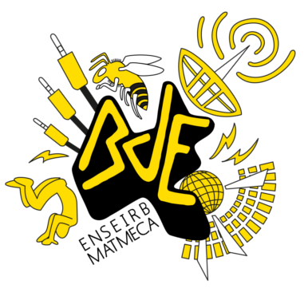
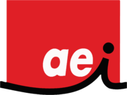
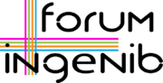
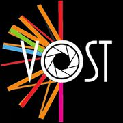
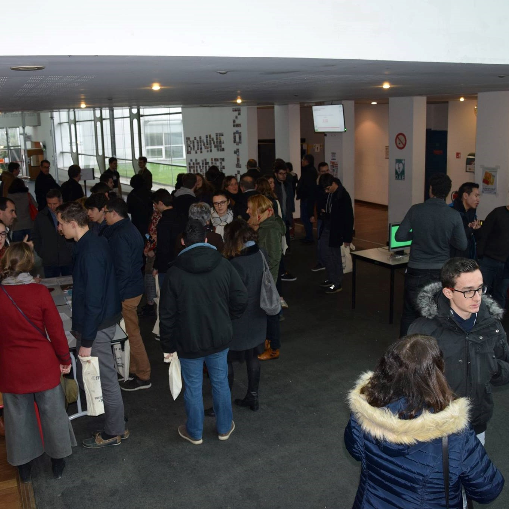
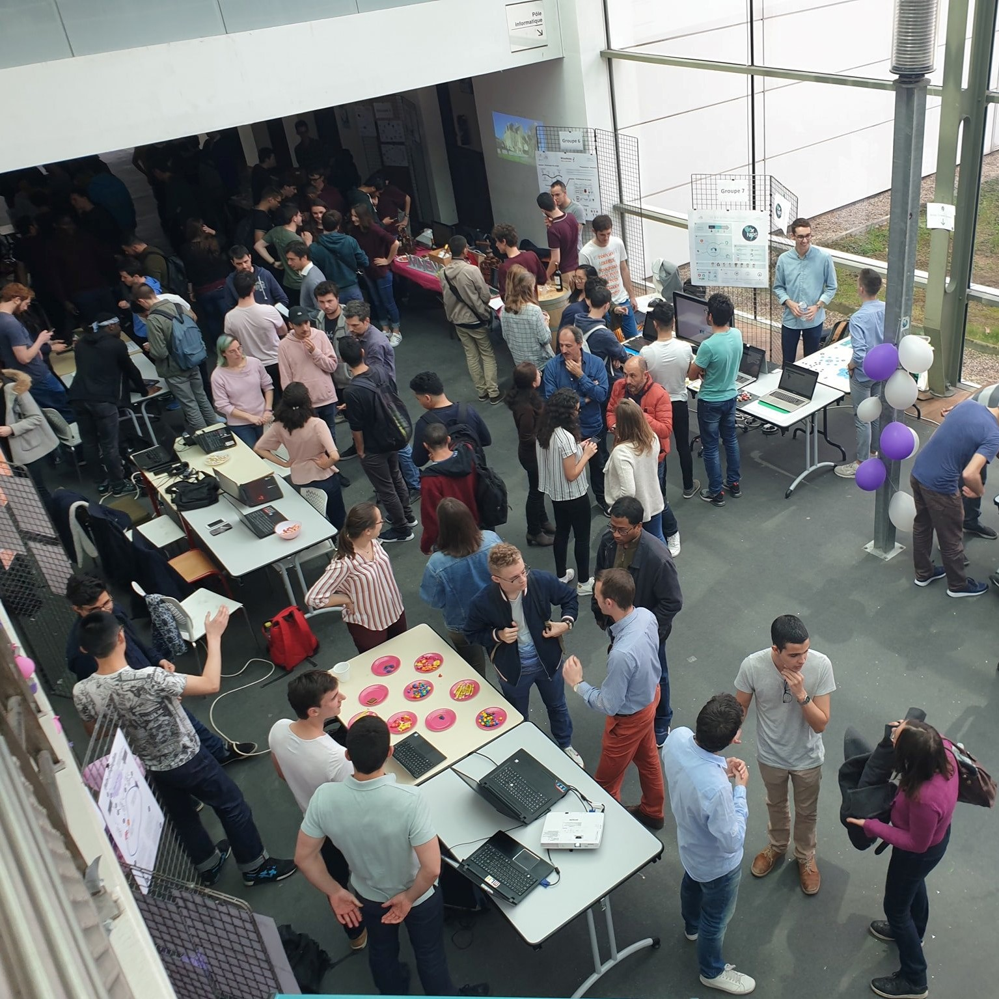
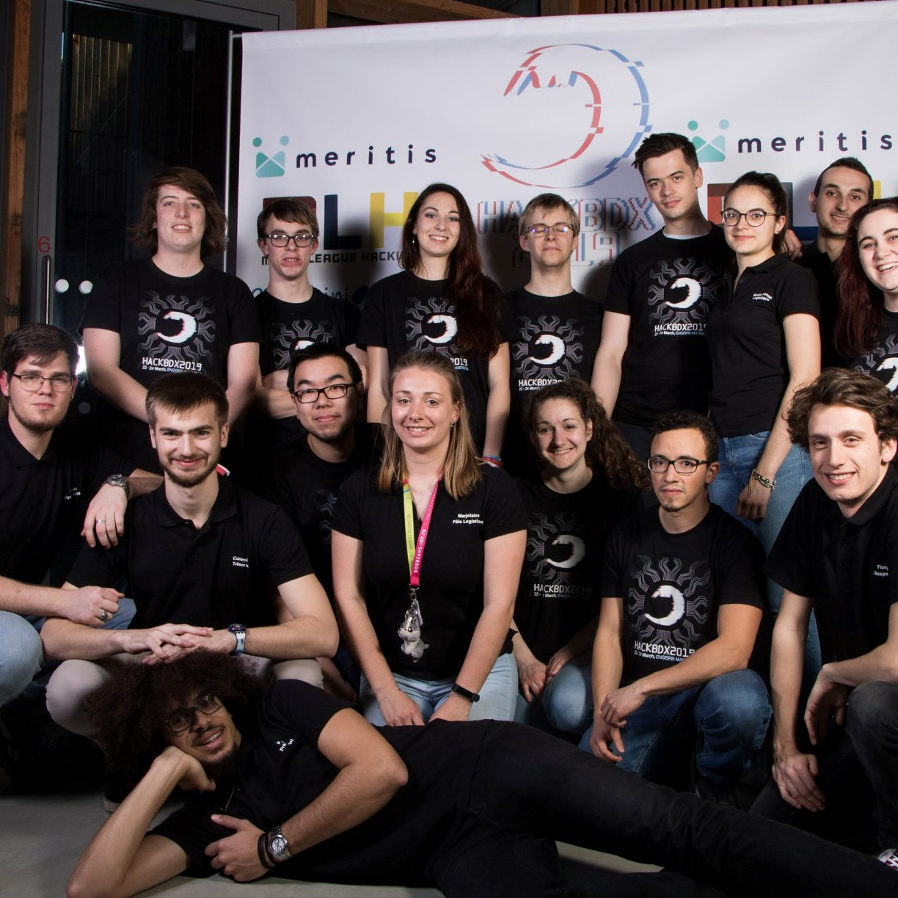
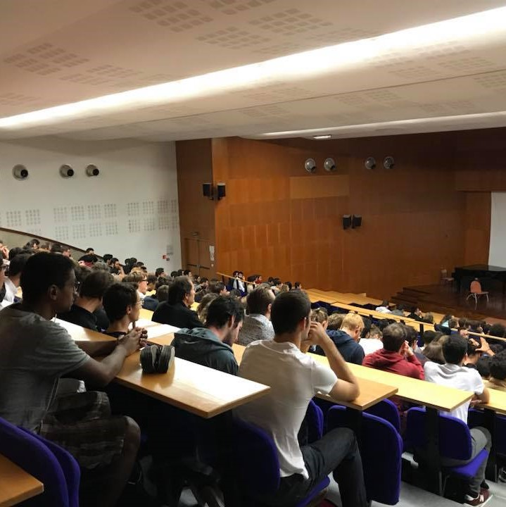

Vie associative
Les étudiants en filière Télécommunications sont particulièrement présents dans la vie associative de l'école, avec plus de 40 clubs et associations.
Près de 75% des étudiants en Télécommunications engagés dans des associations
   
événements
Des évenements pour la filière télécom.
-

Speed Meetings
Evènement convivial permettant aux élèves de différentes années d'échanger entre eux sur leur formation et leurs options.
(exclusif Télécom) -

Plateaux Projets
Présentation des grands projets de semestre aux élèves de première année et aux professeurs. (exclusif Télécom)
-

Ingénib
Forum de recrutement entreprise, organisé par les élèves ingénieurs de l'école.
Idéal pour obtenir des contacts avec des recruteurs et décrocher un stage ! -

Afterwork Partenaires
De nombreux afterworks sont organisés tout au long de l'année par des entreprises venant présenter leur travail aux élèves.
-

Visites entreprises
Des visites d'entreprises partenaires sont organisées pour les élèves de première et troisième année afin de les familiariser au monde de l'entreprise.
Les étudiants visiteront par exemple le site d'Orange en première année. -

Mardis de l'entreprise
Des conférences organisées par des entreprises tous les mardis pour discuter de leur travail ou d'un sujet technique qu'ils souhaitent aborder avec les élèves.
-

HackBordeaux
Un grand hackathon organisé à l'école pour les élèves de Bordeaux, en partenariat avec de nombreuses entreprises et start-ups.
-

Formation Passeport
Formation de deux jours en deuxième année afin de former les élèves aux normes et aux bonnes pratiques de management.
-
Rejoignez
notre
aventure!